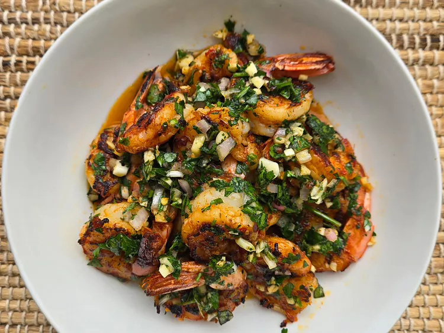

Home
Chimichurri Shrimp

For this chimichurri shrimp, I made the chimichurri sauce from scratch for the first time, and boy am I glad I did. I used fresh oregano instead of dried, and I love how it turned out and think you will too. This zesty herb-based sauce is packed with flavor. Serve with crusty bread to soak up the delicious blend of herbs and olive oil.
Ingredients:
Chimichurri Sauce:
- 1/2 cup finely chopped fresh parsley
- 5 cloves garlic, finely chopped
- 1/2 shallot, finely chopped
- 2 tablespoons finely chopped fresh oregano
- 2 tablespoons red pepper flakes
- 1/2 cup olive oil
- 3 tablespoons red wine vinegar
- 1 teaspoon salt
- 1 teaspoon freshly ground black or white pepper
Shrimp:
- 1 pound jumbo or large shrimp, peeled and deveined
- 3 tablespoons olive oil
- 1 tablespoon honey
- 1 tablespoon garlic powder
- 2 teaspoons smoked paprika
- 1 teaspoon salt
- 1 teaspoon freshly ground black pepper
Steps:
- For chimichurri, add parsley, garlic, shallot, oregano, red pepper, olive oil, vinegar, salt, and pepper to a bowl; stir well to combine. Allow to sit for at least 30 minutes or up to 1 hour to allow flavors to develop.
- To marinate shrimp, add peeled shrimp to a large bowl. Add olive oil, honey, garlic powder, smoked paprika, salt, and pepper. Mix well to coat shrimp. Cover and marinate in the refrigerator for 30 minutes.
- Heat a griddle or cast iron skillet over medium-high heat. Once hot, add shrimp in a single layer. Cook for 3 minutes on each side. You may have to work in batches.
- Put cooked shrimp in a bowl, spoon a generous amount of chimichurri sauce over the shrimp and toss to coat shrimp.